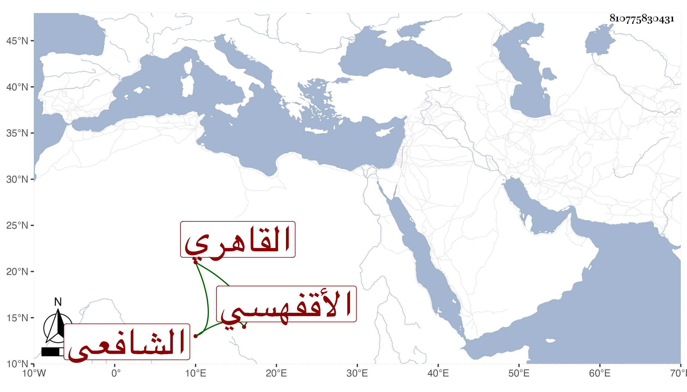

0902Sakhawi.DawLamic.ITO20230111-ara1.EIS1600.810775830431
Biography ID: 810775830431
417
أبو الفضل بن عيسى بن علي بن عيسى البدر بن الشرف الأقفهسي ثم القاهري الشافعي ويسمى محمدا ولد في سنة أربع وستين وثمانمائة بحارة الأقفهسيين وحفظ القرآن والمنهاج وألفية الحديث والنحو وجمع الجوامع وعرض على جماعة كالجوجري والعبادي وابن الصيرفي والشرف موسى البرمكيني ولازم الشمس بن سولة في الفقه وكذا الشمس بن سمنة بل قرأ على الشمس البامي والزين زكريا والبرهان بن أبي شريف وعبد الحق والديمي وعبد القادر الحريري وشيخه البدر المارداني وآخرين في الفقه وأصله والعربية والفرائض والحساب والحديث ولازمني كثيرا فقرأ شرح ألفية العراقي بتمامه وجميع مسلم وأكثر البخاري وسمع أشياء وهو فهم عاقل ساكن تكسب تحت نظر أبيه ثم ترك مع خير وعدم اشتغال بما لا يعنيه وحج في سنة ست وتسعين .
